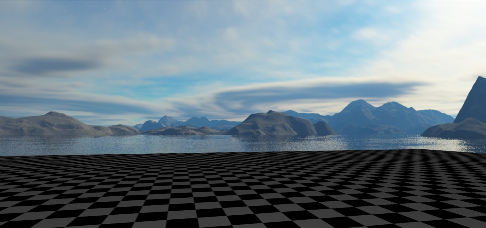
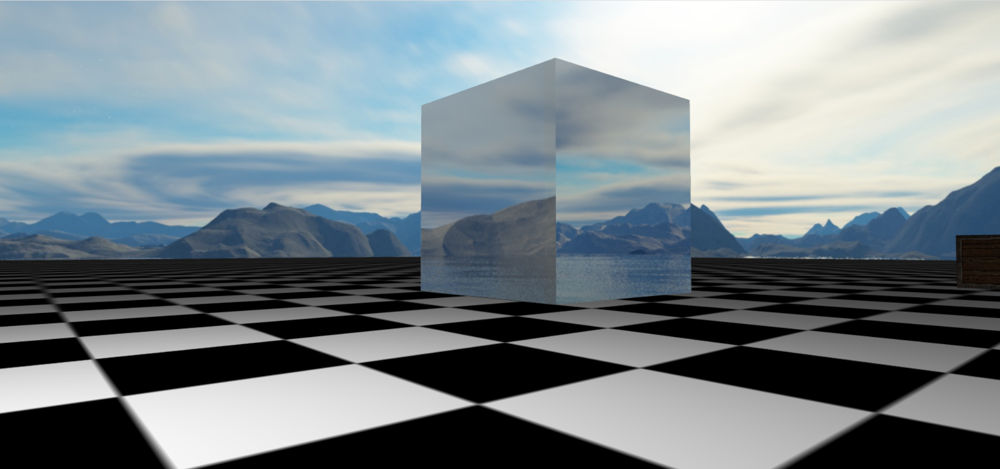
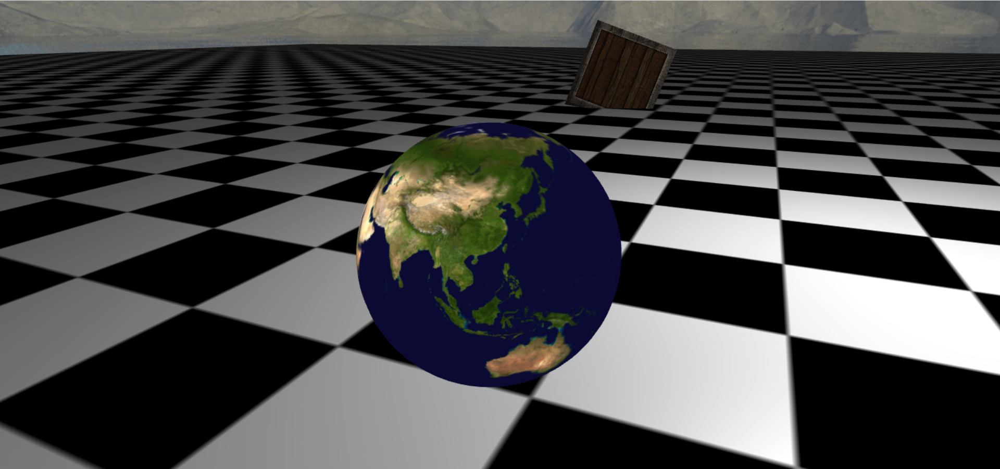

立方体贴图，可以用来实现环境贴图或天空盒。
# 立方体贴图
有一种纹理叫 cubemap，包含六个纹理代表立方体的六个面。不像常规的纹理坐标有两个维度，立方体纹理使用法向量，也就是三维方向。根据法向量的朝向选取六个面中的一个，这个面的像素用来采样生成颜色。
这六个面通过它们相对于立方体重心被引用，背后的 int 值是线性递增的，可以使用第一个加下标来偏移。
gl.TEXTURE_CUBE_MAP_POSITIVE_X | |
gl.TEXTURE_CUBE_MAP_NEGATIVE_X | |
gl.TEXTURE_CUBE_MAP_POSITIVE_Y | |
gl.TEXTURE_CUBE_MAP_NEGATIVE_Y | |
gl.TEXTURE_CUBE_MAP_POSITIVE_Z | |
gl.TEXTURE_CUBE_MAP_NEGATIVE_Z |
与一般的纹理不同之处在于生成时的操作。
function generateTextureByFaces(gl, faces, paras) { | |
let texture = gl.createTexture(); | |
gl.bindTexture(gl.TEXTURE_CUBE_MAP, texture); | |
// This is needed if the images are not on the same domain | |
// NOTE: The server providing the images must give CORS permissions | |
// in order to be able to use the image with WebGL. Most sites | |
// do NOT give permission. | |
// See: https://webglfundamentals.org/webgl/lessons/webgl-cors-permission.html | |
function requestCORSIfNotSameOrigin(img, url) { | |
if ((new URL(url, window.location.href)).origin !== window.location.origin) { | |
img.crossOrigin = ""; | |
} | |
} | |
faces.forEach((url, idx) => { | |
const target = gl.TEXTURE_CUBE_MAP_POSITIVE_X + idx; | |
// Upload the canvas to the cubemap face. | |
const level = paras && paras.level || 0; | |
const internalFormat = paras && paras.internalFormat || gl.RGBA; | |
const width = paras && paras.width || 512; | |
const height = paras && paras.height || 512; | |
const format = paras && paras.format || gl.RGBA; | |
const type = paras && paras.type || gl.UNSIGNED_BYTE; | |
// setup each face so it's immediately renderable | |
gl.texImage2D(target, level, internalFormat, width, height, 0, format, type, null); | |
// Asynchronously load an image | |
const image = new Image(); | |
requestCORSIfNotSameOrigin(image, url) | |
image.src = url; | |
image.addEventListener('load', function() { | |
// Now that the image has loaded make copy it to the texture. | |
gl.bindTexture(gl.TEXTURE_CUBE_MAP, texture); | |
gl.texImage2D(target, level, internalFormat, format, type, image); | |
gl.generateMipmap(gl.TEXTURE_CUBE_MAP); | |
}); | |
}); | |
gl.generateMipmap(gl.TEXTURE_CUBE_MAP); | |
gl.texParameteri(gl.TEXTURE_CUBE_MAP, gl.TEXTURE_MIN_FILTER, gl.LINEAR_MIPMAP_LINEAR); | |
return texture; | |
} |
参考自 WebGL 立方体贴图
# 天空盒
天空盒的一个简单无脑的方法是创造一个非常大的正方体，可以随着相机移动也可以不移动。但是我因为某些原因对天空盒有着非常深的执念，现在只想说创造正方体这种方法就是 sx。
代替使用立方体，我们仅仅绘制一个覆盖整个画布的矩形，并使用立方体贴图。通常我们使用视图投影矩阵在三维空间中投影矩形。在这里，我们会做相反的事情。我们会反过来使用视图投影矩阵的逆来获取相机看向矩形每一个像素的方向。这会是看向立方体贴图的方向。
我们只需要一个矩形：
let vertices = [ | |
-1, -1, | |
1, -1, | |
-1, 1, | |
-1, 1, | |
1, -1, | |
1, 1, | |
]; |
因为已经是裁剪空间中的坐标，矩形会铺满画布。对应的顶点着色器和片段着色器如下：
attribute vec4 aVertexPosition; | |
varying vec4 vFragPosition; | |
void main() { | |
vFragPosition = aVertexPosition; | |
gl_Position = aVertexPosition; | |
gl_Position.z = 1.0; | |
} |
precision highp float; | |
uniform samplerCube uSkybox; | |
uniform mat4 uViewDirectionProjectionInverse; | |
varying vec4 vFragPosition; | |
void main() { | |
vec4 t = uViewDirectionProjectionInverse * vFragPosition; | |
gl_FragColor = textureCube(uSkybox, normalize(t.xyz / t.w)); | |
// gl_FragColor = vec4(vFragPosition.z); | |
} |
在渲染时计算视图投影矩阵的逆的过程：
const projectionMatrix = mat4.create(); | |
camera.perspective(projectionMatrix); | |
const viewMatrix = mat4.create(); | |
camera.view(viewMatrix); | |
viewMatrix[12] = 0; // 我们只关心方向所以清除移动的部分 | |
viewMatrix[13] = 0; | |
viewMatrix[14] = 0; | |
const viewProjInv = mat4.create(); | |
mat4.multiply(viewProjInv, projectionMatrix, viewMatrix); | |
mat4.invert(viewProjInv, viewProjInv); |
记得要清楚移动的部分。js 数组是按列装入 webgl 的，想要清除 webgl 中第四列的前三个，就要清除 js 数组第四行的前三个。

# 环境贴图
给一个普通的正方体进行环境贴图，要注意是在一个普通的正方体的基础上进行贴图的。
环境贴图在片段着色器中计算一下相机方向关于法向量的反射方向，然后用这个方向来 textureCube 就好了。
顶点着色器和片段着色器：
attribute vec4 aVertexPosition; | |
attribute vec3 aVertexNormal; | |
uniform mat4 uProjection; | |
uniform mat4 uView; | |
uniform mat4 uModel; | |
varying vec3 vFragPosition; | |
varying vec3 vFragNormal; | |
void main() { | |
gl_Position = uProjection * uView * uModel * aVertexPosition; | |
vFragPosition = (uModel * aVertexPosition).xyz; | |
vFragNormal = mat3(uModel) * aVertexNormal; | |
} |
precision highp float; | |
varying vec3 vFragPosition; | |
varying vec3 vFragNormal; | |
uniform samplerCube uTexture; | |
uniform vec3 uViewPosition; | |
void main() { | |
vec3 fragNormal = normalize(vFragNormal); | |
vec3 eyeToSurfaceDir = normalize(vFragPosition - uViewPosition); | |
vec3 direction = reflect(eyeToSurfaceDir, fragNormal); | |
gl_FragColor = textureCube(uTexture, direction); | |
} |

# 其他
想起之前在学校上过的图形学课，老师有一个作业是造一个星系。当时做一个地球，贴图是一个南北两级严重变形的平铺图，当时处理的非常不好，现在再用立方体贴图来重新做一下。立方体贴图的好处是没有平铺图那样的变形。
attribute vec4 aVertexPosition; | |
uniform mat4 uModelMatrix; | |
uniform mat4 uViewMatrix; | |
uniform mat4 uProjectionMatrix; | |
varying vec3 vFragPosition; | |
void main(void) { | |
vFragPosition = (uModelMatrix * aVertexPosition).xyz; | |
gl_Position = uProjectionMatrix * uViewMatrix * uModelMatrix * aVertexPosition; | |
} |
precision highp float; | |
varying vec3 vFragPosition; | |
uniform mat4 uModelMatrix; | |
uniform samplerCube uTexture; | |
void main(void) { | |
vec3 fragNormal = normalize(vFragPosition - vec3(uModelMatrix[3][0], uModelMatrix[3][1], uModelMatrix[3][2])); | |
gl_FragColor = textureCube(uTexture, fragNormal); | |
} |
片段着色器中用模型矩阵计算这个物体的位置，片段的位置减去物体的位置得到片段的法向量，之后用片段的法向量调用 textureCube 去查询纹理。

下方是实现效果，点击后，鼠标控制相机方向，wasd 控制相机移动，esc 取消控制。
（天空盒资源来自 LearnOpenGL）
（上方实现效果可能显示出来不完整，可以让上网方式变得更科学一些再试试）
参考资料：
- WebGL 立方体贴图
- WebGL 天空盒
- WebGL 环境贴图 (反射)
- 立方体贴图